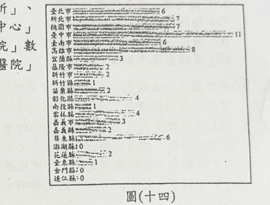
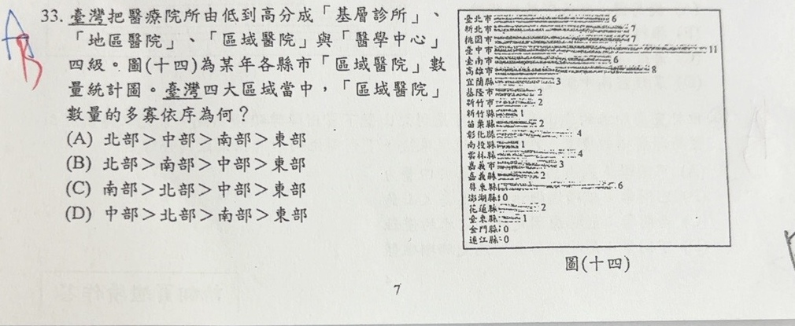

分享原卷｜第33題
完整原題
| 縣市 | 區域醫院數量（家） |
|---|---|
| 臺北市 | 6 |
| 新北市 | 7 |
| 桃園市 | 7 |
| 臺中市 | 11 |
| 臺南市 | 6 |
| 高雄市 | 8 |
| 宜蘭縣 | 3 |
| 基隆市 | 2 |
| 新竹市 | 2 |
| 新竹縣 | 1 |
| 苗栗縣 | 2 |
| 彰化縣 | 4 |
| 南投縣 | 1 |
| 雲林縣 | 4 |
| 嘉義市 | 3 |
| 嘉義縣 | 2 |
| 屏東縣 | 6 |
| 澎湖縣 | 0 |
| 花蓮縣 | 2 |
| 臺東縣 | 1 |
| 金門縣 | 0 |
| 連江縣 | 0 |

臺灣把醫療院所由低到高分成「基層診所」、「地區醫院」、「區域醫院」與「醫學中心」四級。圖(十四)為某年各縣市「區域醫院」數量統計圖。臺灣四大區域當中，「區域醫院」數量的多寡依序為何？
(A) 北部＞中部＞南部＞東部
(B) 北部＞南部＞中部＞東部
(C) 南部＞北部＞中部＞東部
(D) 中部＞北部＞南部＞東部
先想一想，再查看答案、解說與原圖
原卷作答：原卷藍筆A，紅筆訂正B。
(B) 北部＞南部＞中部＞東部
逐項解析
| 選項與原句 | 判讀 | 句意與判斷理由 |
|---|---|---|
| (A) 北部＞中部＞南部＞東部 | 不選 | 原卷加總中部22家，小於南部25家，因此次序錯。 |
| (B) 北部＞南部＞中部＞東部 | 應選 | 北28、南25、中22、東3，排序正確。 |
| (C) 南部＞北部＞中部＞東部 | 不選 | 北部28家多於南部25家，首兩區次序錯。 |
| (D) 中部＞北部＞南部＞東部 | 不選 | 不能以臺中市單一城市最高就認定中部全區最高。 |
詳細說明與解題步驟
先把各縣市放到四大區域，再加總區域醫院家數，不能只看單一縣市臺中市11家最多，就認為中部總數最多。
北部：臺北6＋新北7＋桃園7＋宜蘭3＋基隆2＋新竹市2＋新竹縣1＝28家。
中部：苗栗2＋臺中11＋彰化4＋南投1＋雲林4＝22家。
南部：嘉義市3＋嘉義縣2＋臺南6＋高雄8＋屏東6＋澎湖0＝25家。
東部：花蓮2＋臺東1＝3家。
金門、連江在原圖均為0，不影響四區排序。
所以28＞25＞22＞3，即北部＞南部＞中部＞東部，選B。這是原卷「某年」的統計，不用現在醫院家數替換原題。
核對註記：已實開真正上傳原卷及本題裁切成品，核對完整題幹、全部選項、必要材料與解說。未提供實際考試日期，日期取本題首次使用者訊息（台灣時間）；無冊次或課次證據，歸綜合。
原圖（僅本題）
